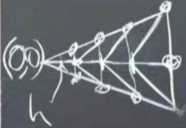

Bu derse vereceğim ödevi tarif ederek başlayayım, ödevde Poisson denkleminin çözümü, ama sınırları kare değil çember olan bir ızgarada çözmenizi isteyeceğim. Çözülecek denklem
$$ -u_{xx} - u_{yy} = 4 $$
Eşitliğin sağ tarafında sabit olduğu için $f$ çarpı $v$ sonrası alınacak entegraller daha basit oluyor tabii, sabit çarpı deneme fonksiyonu, kolay hesap. Sınırda, çember üzerinde, $u = 0$ şartını koyuyoruz. Bu sistemi çözeceğiz.
Analitik çözümün ne olduğunu görmek zore değil, $u = 1 - x^2 - y^2$ çözüm. Yerine koyarsak doğrulaması kolay, iki kere $x$ türevi 2, $y$ türevi 2, toplam 4.
Çember içindeki ızgaraya önce bir poligonla başlıyorum. Bu arada araştırma sorusu bağlamında aklımdaki sorulardan biri ızgara şekline göre hesabın ortaya çıkaracağı hata miktarı. Bazı ızgaralar diğerlerinden daha iyi olabilir.
Sınır şartımızı hatırlarsak düz cizgilerin çembere değdiği noktalarda $u = 0$.
$M$ tane köşe olsun, ve orta noktadan köşelere çizgiler çekerek üçgenler oluşturalım, altta üçgenlerden biri görülüyor,

Üçgenin alt iki köşesinde tabii ki $u = 0$ şartı geçerli. İki üçgen arasındaki sınırda ise doğal sınır şartı denilen Neumann şartı geçerli olacak, eğimin sıfır olma şartı, yani $\mathrm{d} u / \mathrm{d} n = 0$. Orijinde ne yapmam gerektiğinden emin değilim şu anda.
Gerçek bir problem işte burada. Muhakkak problem biraz yapay, çünkü analitik çözümün ne olduğunu biliyoruz, ama mesela bu problemde hesap yapmak, hatanın ne olacağını düşünmek, bunlar ciddi işler.
Bu problemi çözerken parçasal lineer öğeler (piecewise linear elements) kullanmanızı isteyeceğim, daha önce bahsettiğim piramitler bunlar. Ama bazılarınız karesel (quadratic) öğeler kullanmak isterse buna hayır demem. Bu öğeler daha hassas / doğru sonuçlar verecektir.
Simdi izgarayi daha detayli sekilde yaratalim. Bir liste yaratacagiz, bu listede izgara noktalari olacak, bu liste cozum algoritmasina verilecek ve algoritma oradan devam edecek.
Çember içinde daha önce yarattığımız üçgenlerden iki tanesini yanyana düşünelim, en sağ üstteki nokta nerededir? $(\cos \pi/8, \sin \pi/8)$ değil mi? Sonra en soldan en sağa $N$ tane (resimde $N=4$) düğüm daha koyarız, her aralık yatay eksende $h$ büyüklüğünde olabilir, ve $N h = \cos\pi/8$ tabii ki.

[devam edecek]
Kaynaklar
[1] 18.085 SUMMER 2012 Site, https://math.mit.edu/classes/18.085/2012summer.html